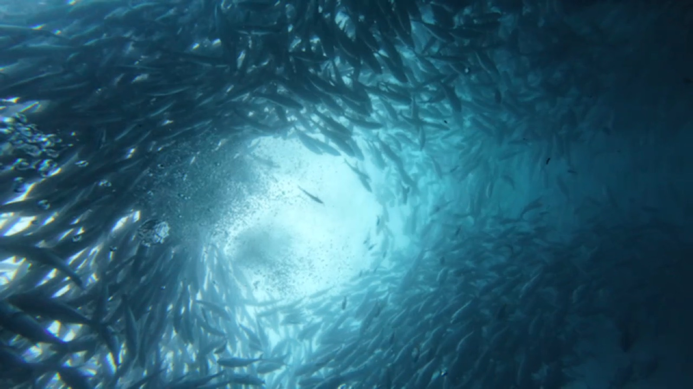

Plankton und große Schwärme
Mehr Plankton im Wasser, die Sicht an Sail Rock liegt also eher bei 5–10 m. Dieses Plankton ernährt die großen Fischschwärme, und die Walhaie kommen hinterher. Koh Ma und Little Sail Rock sind am klarsten.
Bis Weihnachten fahren wir um 8:00 ab: Treffpunkt am Pier von Chaloklum um 7:45, zurück gegen 13:30–14:00.Warum?

Die kurze Antwort
Koh Phangan liegt auf der Seite des Golfs von Thailand, daher sind die Jahreszeiten anders als in Phuket und der Andamanensee. Eine lange Schließzeit gibt es hier nicht: Wir fahren jeden Monat raus, und die einzige echte Pause ist der Monsun am Jahresende.
Monat für Monat
Mehr Plankton im Wasser, die Sicht an Sail Rock liegt also eher bei 5–10 m. Dieses Plankton ernährt die großen Fischschwärme, und die Walhaie kommen hinterher. Koh Ma und Little Sail Rock sind am klarsten.
Die klassischen Monate für Walhaie, während das Wasser klarer wird. Koh Ma und Little Sail Rock sind noch in Bestform, deshalb ist das auch eine tolle Zeit für Kurse.
Sail Rock in seiner klarsten Zeit, oft mit 20–30 m Sicht. Walhaie sind seltener, aber der September hat uns einige unserer besten Begegnungen beschert.
An manchen Tagen raue See. Wenn das Meer nicht sicher ist, bleibt das Boot im Hafen, und du bekommst dein Geld vollständig zurück. An ruhigen Tagen tauchen wir trotzdem.
Tauchen lernen
Im Open-Water-Kurs findet der erste Tag im flachen Wasser der Bucht von Chaloklum statt, direkt vor dem Laden, und hängt deshalb kaum von der Jahreszeit ab. Für die Freiwassertauchgänge wählen wir je nach Bedingungen und Befinden der Gruppe zwischen Sail Rock und der ruhigeren Koh Ma.
Unser Rat
Das Meer ändert sich von Tag zu Tag, und damit auch, was an Sail Rock auftaucht. Zwei oder drei Tage im Wasser geben dir viel bessere Chancen auf die Bedingungen — oder den Walhai —, für die du gekommen bist.
Und frag uns vor der Buchung. Schick uns deine Daten auf WhatsApp, und wir sagen dir ehrlich, wie das Wasser zuletzt war. Mehr dazu in unserem Sail-Rock-Guide und unserem Walhai-Guide.
Fragen
Fast. Wir tauchen jeden Monat im Jahr. Während des Monsuns, ungefähr November bis Mitte Dezember, bleibt das Boot an Tagen, an denen das Meer nicht sicher ist, im Hafen, und du bekommst dein Geld vollständig zurück.
Von Mai bis Oktober, oft 20 bis 30 Meter. Von Januar bis April ist mehr Plankton im Wasser und die Sicht liegt eher bei 5 bis 10 Metern, aber genau dieses Plankton bringt die großen Fischschwärme und die Walhaie.
April bis Juni ist die klassische Saison, und wir hatten auch im Februar und September tolle Begegnungen. Eine Sichtung ist nie garantiert.
Jeder Monat außerhalb des Monsuns. Der erste Tag des Open-Water-Kurses findet im flachen Wasser der Bucht von Chaloklum statt, und für die Freiwassertauchgänge wählen wir je nach Bedingungen zwischen Sail Rock und der ruhigeren Koh Ma.
Sag uns, wann du kommst und was du sehen möchtest. Wir sagen dir ehrlich, was dich erwartet.